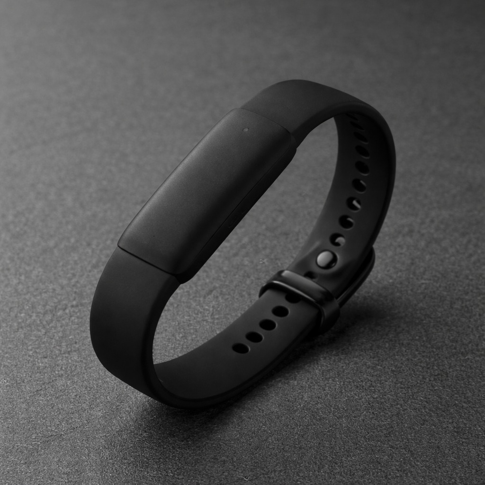

A Pulse é uma pulseira inteligente que detecta sinais de pré-crise em pessoas autistas, utilizando sensores biométricos e inteligência artificial para emitir alertas antecipados e proporcionar mais segurança e tranquilidade.

Pessoas autistas frequentemente enfrentam situações de estresse e crises de sobrecarga sensorial que podem ser difíceis de prever e gerenciar. Para familiares e cuidadores, a incerteza constante gera ansiedade e dificulta o planejamento de atividades diárias.
Muitas vezes a pessoa autista não consegue expressar quando está se sentindo sobrecarregada
Crises inesperadas interrompem atividades importantes do dia a dia
Familiares vivem em estado de alerta constante, afetando sua saúde mental
Detectamos sinais antes da crise acontecer
Algoritmos que aprendem os padrões individuais
Monitoramento 24h para segurança total
A Pulse transforma dados biométricos em previsões acionáveis. Nossa inteligência artificial identifica os primeiros sinais de desconforto, permitindo intervenção antes que uma crise se instale.
A Pulse combina hardware avançado com algoritmos de machine learning para criar uma solução de cuidado única e acessível.
Monitoramento contínuo de batimentos cardíacos, temperatura corporal e outros indicadores fisiológicos relevantes.
Algoritmos de IA identificam padrões comportamentais e preveem situações de desconforto antes que se tornem crises.
Notificações antecipadas para usuários, familiares e cuidadores, permitindo intervenção preventiva e adequada.
Sensores biométricos de alta precisão capturam dados fisiológicos em tempo real, 24 horas por dia.
Algoritmos de machine learning processam os dados e identificam padrões que indicam situações de desconforto.
Notificações são enviadas aos cuidadores e familiares, permitindo intervenção antes que a crise se instale.
A pulseira proporciona autonomia e segurança, permitindo que pessoas autistas tenham mais liberdade em suas atividades diárias.
Pais e cuidadores recebem alertas antecipados, reduzindo ansiedade e permitindo resposta mais eficaz.
Dashboard intuitivo com histórico de dados, padrões comportamentais e insights personalizados para cada usuário.
Estratégias de coping podem ser aplicadas no momento ideal, aumentando significativamente sua eficácia.
Principal beneficiário, ganhando mais autonomia, segurança e qualidade de vida no dia a dia.
Redução da sobrecarga e ansiedade, com alertas que permitem intervenção no momento certo.
Escolas, clínicas e centros de apoio podem integrar a Pulse para oferecer cuidado mais completo.
O projeto Pulse nasceu da união entre tecnologia e propósito social. Desenvolvido por estudantes de TI comprometidos com acessibilidade e inclusão.
Desenvolvido em ambiente universitário com orientação especializada
Equipe multidisciplinar dedicada a soluções de impacto social
Cadastre-se para receber novidades, participar de testes ou saber mais sobre o projeto Pulse.
Seus dados estão seguros. Não enviamos spam.